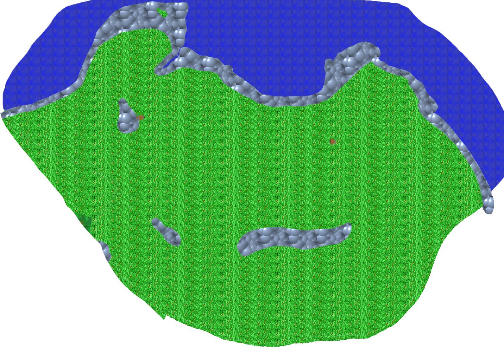

back
The Highlands

The Highlands is a remote region of the Continent that cannot be accessed by any water way or roads. It is very far from any other civilized nation and therefore it is rare that adventurers make it all the way here. There are elementals wondering the land along with Tengus, Halflings and Hags.
Cities: The only hospitable city in the region is Zelanda, a Halfling city that is self-substaining and welcoming of peaceful strangers. The other village of the region is Grepair, a neutral Tengu's Nest.
Landmark:
There are two important landmark in the Highlands, one is the Temple of the Wind at the very edge of the world at the most windy spot of the Highlands. The other is the grassland to the south which have been called the Ghost Hills because spectres and other undead being tends to roam its land. The Ghost Hills is a very spooky place that is not for the faint of heart.
Environment:
The Highlands are hilly grasslands with very little tall vegetation. Usually a bush is about as tall as something will get in the region and you would be hard pressed to find a tree anywhere. The wind is very present in the region and if you stand on top of a hill, some smaller creatures could be literally blown away. The Coastline of the Highlands is impossible to reach, there are cliffs over 800 meters tall between the top of the grassland and the ocean, the fall would kill anyone and climbing it would be suicide.
Wildlife and Monsters:
Most of the Highlands is filled with roaming humanoids. Trolls, Orcs, Tengus, Halflings, Hobgoblins and sometimes even Giants. Another common sight is Elementals and other otherworldly beings. This applies to most of the Highlands except for its southern portion, the Ghost Hills. The Ghost Hills are filled with ghosts and other undead creatures. there is a constant mist in the region and the night is especially spooky.